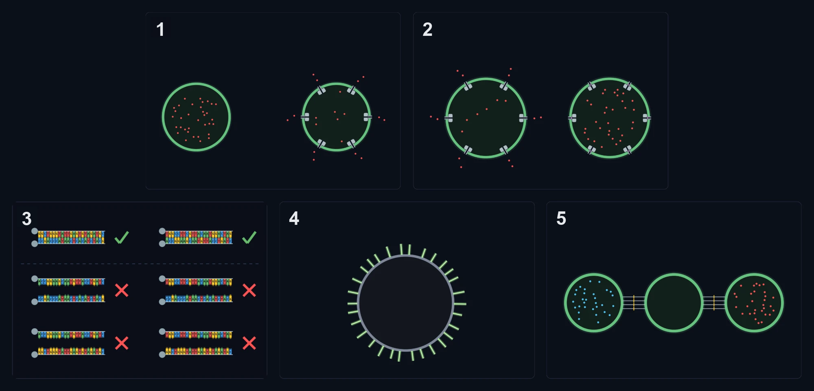
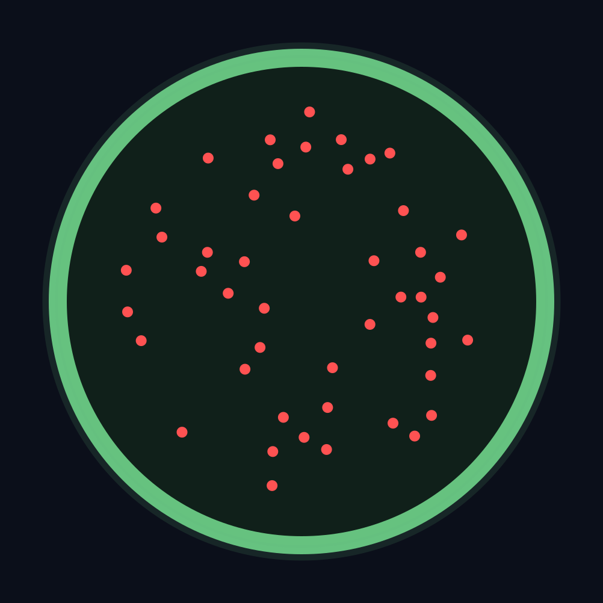
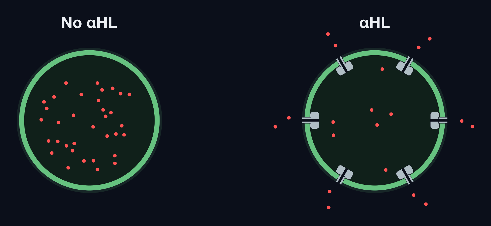
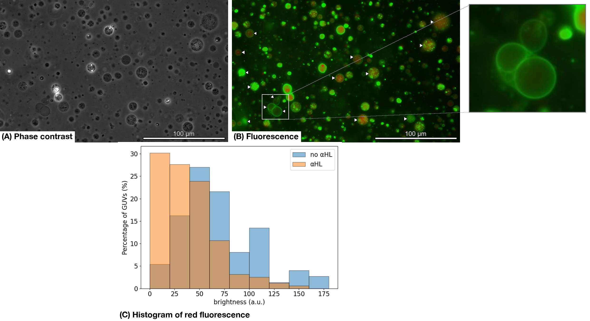
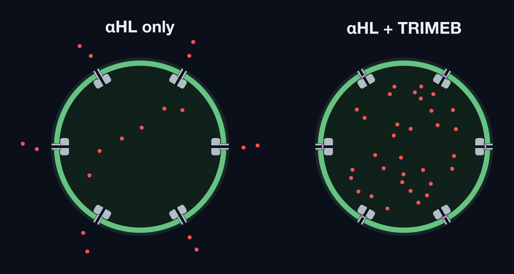
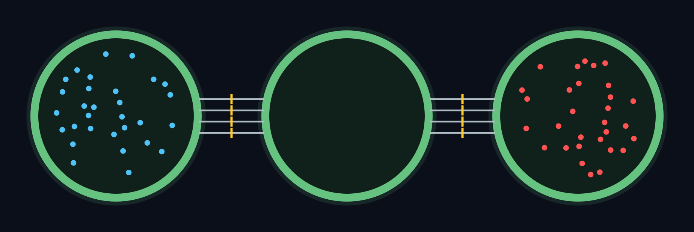
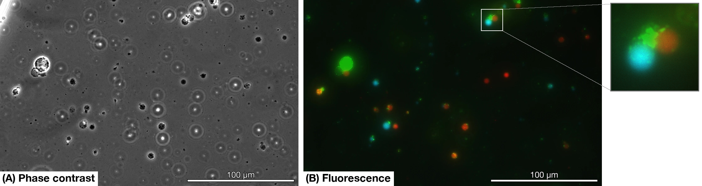

Experiment

Abstract for the Experiment
The objective of this study was to specifically connect GUVs via DNA and facilitate the exchange of materials between GUVs. To achieve this objective, GUVs, αHL, and DNA were prepared, and the following experiments were conducted:
- Whether pores could be formed in the GUV membrane by αHL
- Whether the pores formed by αHL could be closed by TRIMEB
- Whether the prepared DNA can bind specifically
- Whether DNA could be inserted into the GUV membrane
- Whether GUVs could be connected via DNA
The results confirmed that pores were formed in the GUV membrane by αHL and that these pores could subsequently be closed by TRIMEB. In addition, DNA was confirmed to be inserted into the GUV membrane, and GUVs could be connected via DNA. However, the efficiency of GUV–GUV connection was relatively low. One possible reason for the low connection efficiency is that some of the DNA-conjugated lipids may have migrated into the interior of the GUVs during GUV formation, resulting in a lower density of DNA-conjugated lipids on the outer surface of the GUV membrane.

Method & Results
GUV Preparation
We made GUVs by the emulsion transfer method [1].
The GUV membranes contained green fluorescent molecules, while the interiors contained red fluorescent molecules.


We can see green fluorescence on the membrane and red fluorescence inside, so the GUVs were made correctly.
α-Hemolysin Purification
αHL was expressed and purified using Escherichia coli. The purified protein was then analyzed by SDS-PAGE to confirm successful purification of αHL.
As shown in Fig. 2, a band was observed at approximately 25–35 kDa.
Previous studies have reported that αHL has a molecular weight of approximately 33 kDa [2].
Therefore, the band observed in Fig. 2 was considered to correspond to αHL.
These results confirmed that αHL was successfully purified. In addition, a band was observed at approximately 60–75 kDa.
This band was considered to possibly result from the formation of an αHL dimer.

Pore Formation in GUVs with α-Hemolysin
We added αHL (25 ng/μL) to the inner aqueous solution of the GUVs.
αHL is known to form pores in lipid membranes, which is expected to allow the fluorescent molecules inside the GUVs to leak out.


The red fluorescence has gone out, so the contents come out of the GUVs. From this, we think that nanopores were formed in the GUVs.
The figure below shows the distribution of red fluorescence both with and without the addition of αHL.
From this distribution, it can be seen that the brightness is lower when αHL is added. This confirms that the red fluorescence has been lost and that the fluorescent molecules have escaped through the holes opened by alpha-hemolysin.
Blocking the Pores with TRIMEB
We added αHL (25 ng/μL) to the inner aqueous solution of the GUVs and TRIMEB (4 mM) to the outer solution.
The addition of TRIMEB is known to suppress the leakage of substances through the pores formed by αHL in the GUV membrane.


This figure shows the distribution of red fluorescence with and without the addition of TRMEB.
This distribution indicates that the addition of TRMEB makes it more difficult for fluorescent molecules to escape via alpha-hemolysin.
Creation of DOPE-MAL-DNA
In this project, DNA is conjugated with maleimide-functionalized lipids through a thiol–maleimide coupling reaction to generate lipid-conjugated DNA.

HPLC was used to separate lipid-conjugated DNA, unreacted DNA, and free lipids.
The presence of DNA in the collected fractions was confirmed by measuring their absorbance.
Fig. 5 shows the results of HPLC and the absorbance measurement.

In the HPLC analysis, a peak appeared at a location where neither DNA nor maleimide-conjugated lipids had been observed.We interpreted this third peak as lipid-conjugated DNA.
We performed an absorbance measurement to confirm whether the solution recovered at that peak contained DNA. As a result, we observed an absorption peak at 260 nm specific to DNA, leading us to conclude that the solution contained DNA.
DNA Receptor Dimerization
The DNA sequences used in this experiment were as follows:
L1: 5′-GCATCTACACTCAATACCCAGCC-3′ (SH)
R1: (SH) 5′-GGCTGGGTATTGAGTGTAGATGC-3′
L2: 5′-CTAGTCCATTGTAACGAAGGCCA-3′ (SH)
R2: (SH) 5′-TGGCCTTCGTTACAATGGACTAG-3′
L1 and R1, as well as L2 and R2, were designed to be complementary and to hybridize with each other.
Gel electrophoresis was used to investigate whether complementary DNA receptors form dimers in the absence of GUVs and whether non-complementary pairs exhibit nonspecific binding.
All six possible combinations of L1, R1, L2, and R2 were examined.

For L1 + R1 and L2 + R2, two closely spaced bands were observed.
The first band appeared at the same position as the bands in the other samples and was therefore considered to correspond to unbound DNA.
In contrast, the second band appeared higher than those observed in the other samples and was considered to correspond to a DNA complex formed by the binding of the complementary DNA strands.
These results confirmed that the complementary DNA strands successfully bound to each other.
Attaching DNA to GUVs
We added DNA to the inner aqueous solution of the GUVs and then stained the GUVs with SYBR Gold. The GUVs used here are different from the GUVs used so far: they do not contain NBD-PE.
Fig. 7 shows the stained GUVs. We can see fluorescence around the membrane. From this, we think that the DNA was inserted into the GUV membrane.

Connecting GUVs with DNA
We prepared three kinds of GUVs with DNA by the method in the previous section. We adjusted them so that the fluorescence inside was red (sulforhodamine B), none, and blue (Alexa647), in this order.


Only 6.25% of the GUVs exhibited the intended binding, indicating that only a small fraction of the GUVs successfully bound to each other.
This may be because centrifugation was performed after the DNA-conjugated lipids were added to the inner aqueous solution, causing most of the DNA-conjugated lipids to orient toward the inside of the GUVs.
As a result, the surface density of DNA-conjugated lipids on the outer surface of the GUVs may have been substantially lower than the intended value.
Therefore, this issue is expected to be improved by adding the DNA-conjugated lipids after GUV formation.
Discussion
We could not show by experiments the main idea of this project, that is, to connect GUVs specifically with DNA and to exchange materials between them. However, we confirmed that we can make pores in GUVs with αHL and block them. If we can add DNA to GUVs from the outside and adjust the surface density, we think that we can confirm ALiGN by experiments.
References for the Experiment
[1] Pautot, S., Frisken, B. J. & Weitz, D. A. Production of unilamellar vesicles using an inverted emulsion. Langmuir 19, 2870–2879 (2003). https://doi.org/10.1021/la026100v
[2] Chatterjee, A., Roy, A., Satheesh, T., Das, P. P., Mondal, B., Kishore, P., Ganji, M. & Dutta, S Structural insights into pre-pore intermediates of alpha-hemolysin in the lipidic environment. Nature 16, 6348 (2025). https://doi.org/10.1038/s41467-025-61741-x